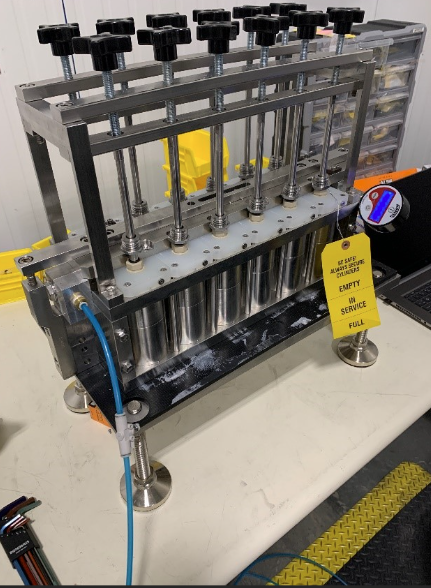
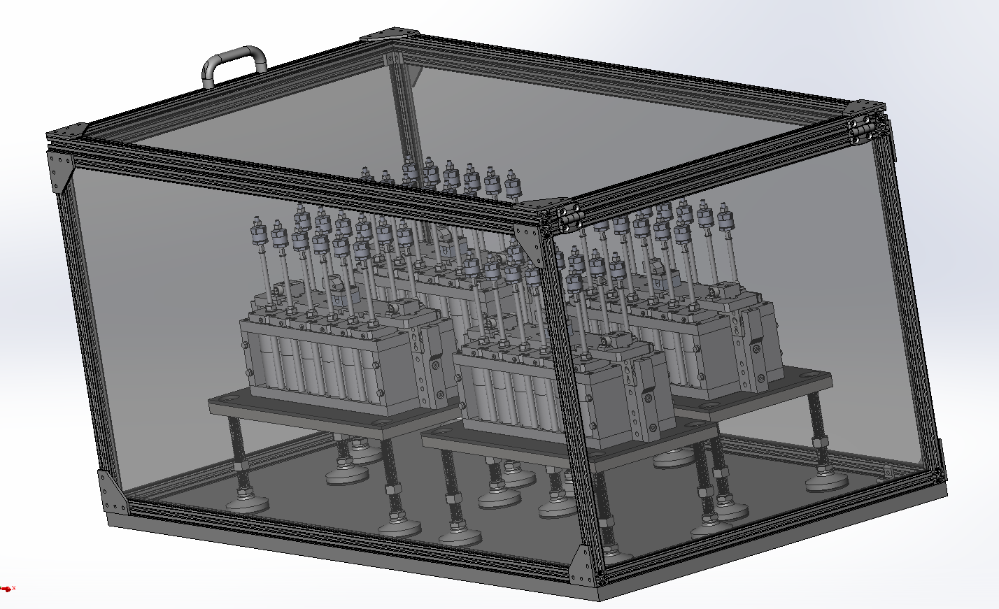
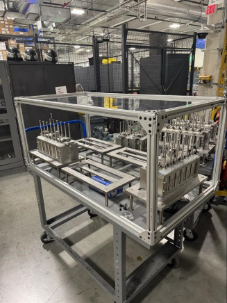
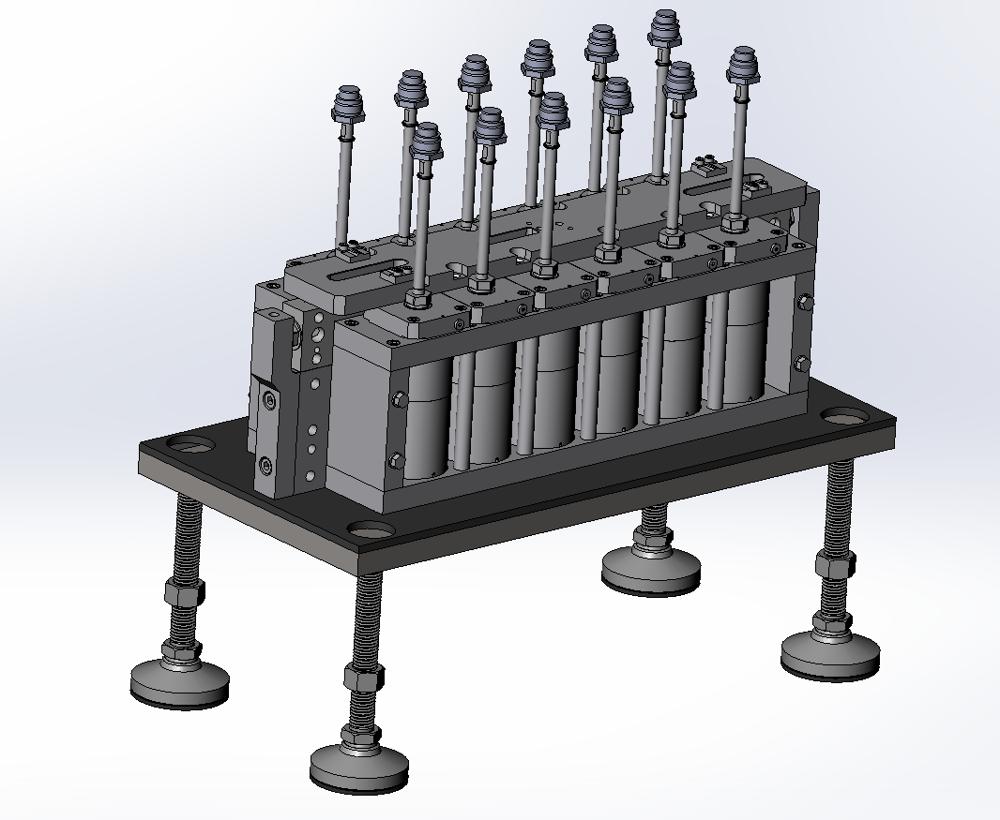
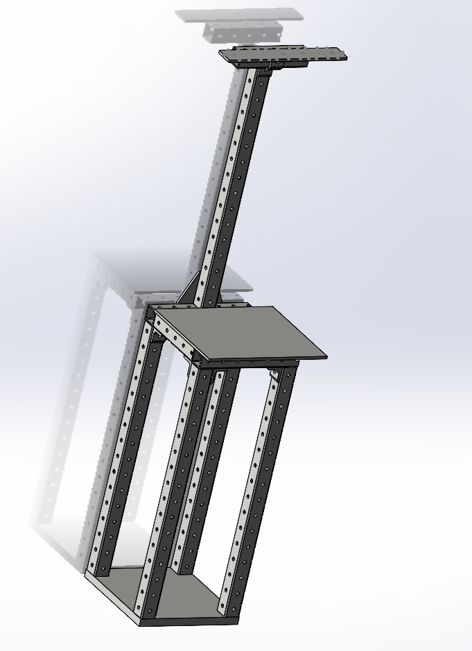
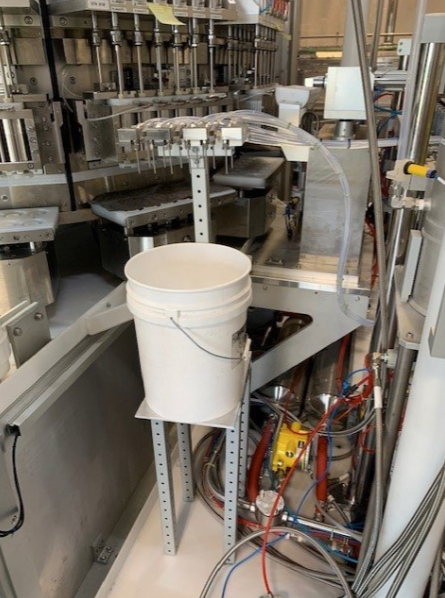
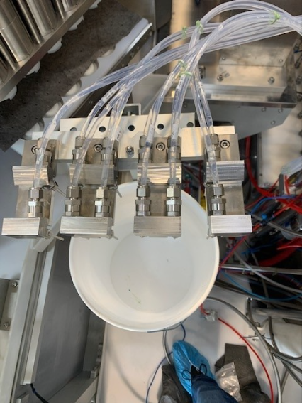

Case Study 02 · Flagship Program · 4 Custom Fixtures
Electrolyte Filler Maintenance Program
Built a full rebuild/maintenance toolkit from scratch

Problem
Rolling out a formal rebuild and maintenance program for our electrolyte filling equipment surfaced a gap: there was no purpose-built tooling to execute these rebuilds safely, consistently, or efficiently. I identified the need for, designed, and built four custom fixtures to close that gap.
My Role & Constraints
I owned the full toolkit end-to-end — identifying each tooling gap as it emerged during the rebuild program's rollout, then designing, building, and iterating each fixture.
Approach & Key Decisions
1. Benchtop Leak Test
Fill-head assemblies rely on several internal seals to hold a deep vacuum and positive pressure during the fill process. I designed a bench fixture that clamps onto a rebuilt assembly, pressurizes it through a dedicated port, and measures pressure decay over time — verifying seal integrity before the assembly goes back into production, catching leaks early instead of downstream.

2. Fill Head Cart
Before this fixture, there was no dedicated, safety-rated way to move contaminated components from the clean-room environment to the rebuild space. I designed a mobile cart with a fully enclosed cover (clear viewing panels, gasket seals, latch) so contaminated assemblies could be transported without exposing personnel to hazardous vapors.


3. Fill Head Stand
The fill head's geometry made it difficult to access all of its components during rebuild at a normal working height. I designed a stand that elevates the assembly into an ergonomic working position, with leveling feet for stability and a chemically-resistant stainless-steel work surface.

4. Pump Calibration Stand
Electrolyte pumps must dispense a precise volume to fill cells correctly, but there was no dedicated way to calibrate them efficiently. I designed a fixture to mount pumps for calibration, enabling efficient, repeatable calibration across the entire equipment fleet.



Outcome
This toolkit enabled a repeatable maintenance program capable of 2 fill-head rebuilds per shift (4 per day) and daily pump calibrations.